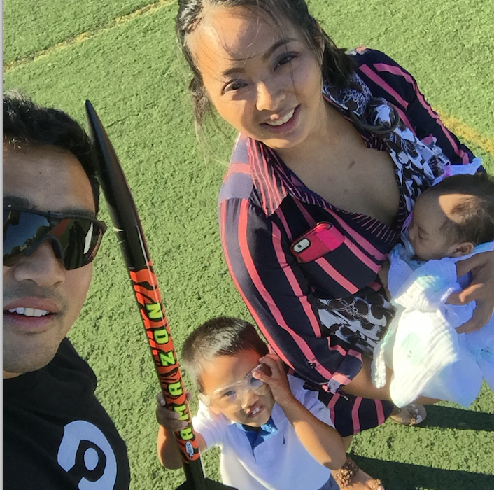

About Me
"I got two phones; one for the plug and one for the load."
-Confucius
I recently interviewed at a tech company in the area and was asked, "what are some adjectives that your friends would use to describe you"? I thought about it from their perspective and chose some words that would demonstrate my work ethic. Relentless and passionate are what I chose. Tell a story using the STAR method... and then and then and then... Needless to say I didn't get the job.
What I learned from that experience is that I, like everyone else, was born to stand out. I lost an opportunity by trying to fit in. What was the mold? Probably some "Business Insider" article I read that started like "5 things you should say at your next job interview". I've been a Captain in the US Army, a rocket scientist, and a startup founder. A majority of my friends would have responded differently: unique and inspirational.
I bring those same qualities to every project I'm involved in. Like your project, there are many like it but this one is your own. I want to hear your vision for the project and provide honest feedback on your vision. Let's connect and talk about how I can add value to your team.
Resume | Portfolio